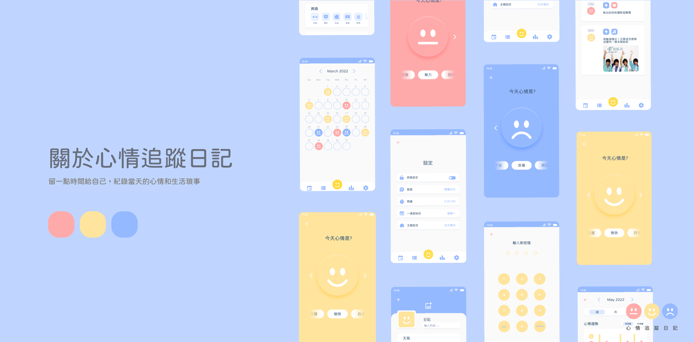
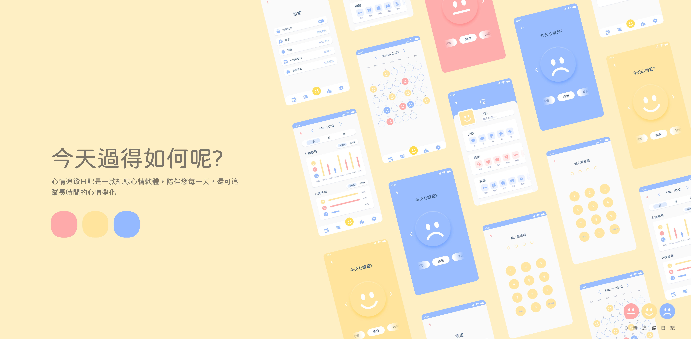

團隊理念
現代人生活忙碌，心情追蹤日記讓使用者過完忙碌的一天後，可以留一點時間給自己，紀錄當天的心情和生活瑣事
設計團隊
-
羅郁茹
我的名字叫羅郁茹，20歲
花蓮人，2020年出生於花蓮，家附近有胖胖白貓，爸爸每天都會餵牠吃三餐加點心，真是羨慕貓阿，花蓮的山和海靠很近，高中可以看到紅色的燈塔，喜歡奇怪可愛的東西。
-
劉家妤
我的名字叫劉家妤，20歲。
住在國立臺灣藝術大學的蚊子館，在視覺傳達設計系學習。每天都要趕作業到凌晨3點才能休息。早上5點睡，每天要睡足5個小時。一覺到天亮，決不把疲勞和壓力留到第二天。醫生都說我很正常。
-
陳彥余
我的名字叫陳彥余，20歲
最近的夢想是躺在大草原上，看著藍天白雲，看著白雲的形狀，看到時間流逝也不會感到慌張那就太好了，最好再搭配美味的甜食，和可愛的食蟻獸，喜歡毛絨絨的東西。
-
麥巧枚
我的名字叫麥巧枚，20歲
在台灣藝術大學上課，來到視覺傳達設計學系不知不覺已過了2年，來到視傳系有堆積如山的作業，也曾在補習班教小朋友生物，原本想考教程，但看到補習班的小朋友後就不想考了。